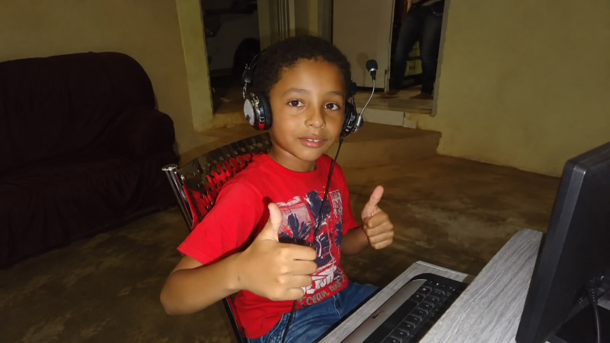
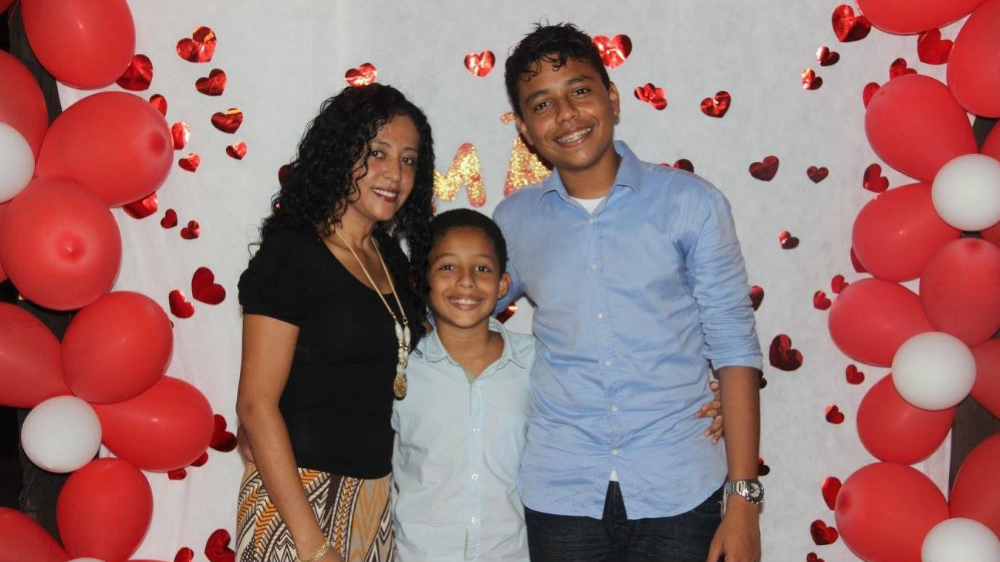
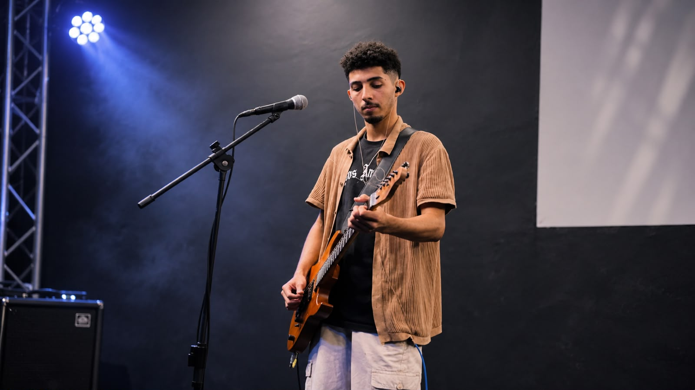
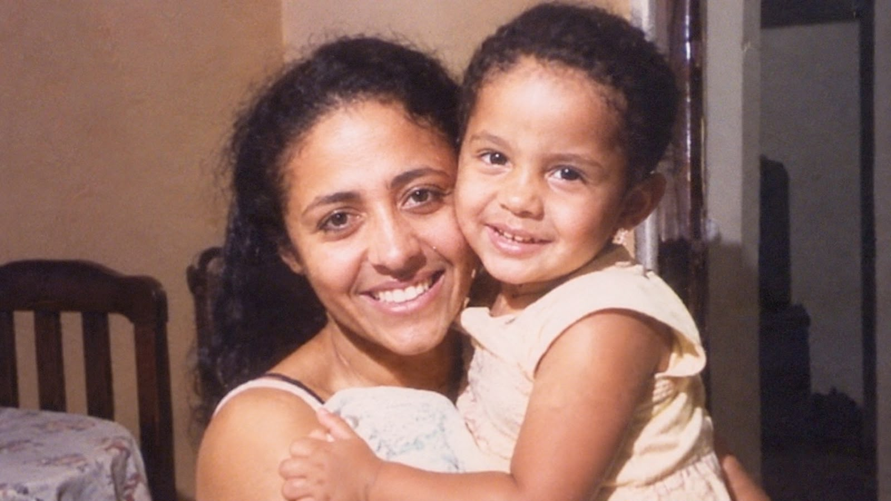

IMP RECORDS / ARTISTA
IMP RECORDS / ARTISTA
GABRIEL LEAL
MÚSICA · FÉ · PRODUÇÃO · PROPÓSITO, MARANHÃO, BRASIL
ONDE A MÚSICA COMEÇOU.
A relação de Gabriel Leal com a música começou ainda na infância. Por volta dos cinco ou seis anos, ele observava os músicos tocando na igreja e sentia admiração pelos instrumentos. Aos sete anos, quando seu pai comprou um teclado para seu irmão, começou a aprender sozinho, principalmente de ouvido, tentando reproduzir as melodias que escutava.
Uma de suas primeiras experiências foi tentar tocar uma música do Coldplay. Mesmo sendo canhoto, aprendeu a tocar teclado da maneira convencional, utilizando as duas mãos. A partir dali, a música passou a fazer parte de sua vida.

UMA AUSÊNCIA, MUITOS ENSINAMENTOS.
Em 28 de dezembro de 2016, aos nove anos, Gabriel perdeu sua mãe, Lúcia Maria Leal Aguiar, nascida em 11 de maio de 1979, em decorrência de um câncer. Ela foi uma mulher guerreira, que enfrentou suas batalhas muitas vezes em silêncio para proteger o filho.
Sua partida deixou uma ausência imensa, mas também ensinamentos que continuam presentes: aprender a perdoar, cuidar de si mesmo, seguir em frente e nunca permitir que alguém o faça acreditar que não é capaz de realizar seus sonhos. Ela apoiava seus interesses e gostava de patinação, atividade que hoje também representa uma lembrança especial para Gabriel.
Gabriel sempre foi muito próximo de seu irmão, mas, após a partida da mãe, essa ligação se fortaleceu ainda mais. Seu irmão se tornou uma espécie de segundo pai, alguém que esteve presente, ofereceu apoio e assumiu, de certa forma, o papel de incentivar e acreditar em seus sonhos, algo que continua fazendo até hoje.
Existem atitudes da infância pelas quais ele gostaria de ter pedido desculpas, mas, naquela época, ainda não compreendia a dimensão do que estava acontecendo. Hoje, procura honrar a memória da mãe por meio de suas escolhas e da maneira como continua vivendo.

DO TECLADO À GUITARRA.
Depois do teclado, Gabriel se interessou pelo violão ao ver um amigo tocando na escola. Aprendeu por conta própria, e sua primeira música foi Come As You Are, do Nirvana. Mais tarde, por influência do pai, começou a estudar contrabaixo e alcançou um nível intermediário.
Sua avó lhe presenteou com uma guitarra elétrica usada da marca Condor, acompanhada de sua primeira pedaleira, uma Zoom G1 cinza. Nessa fase, começou a acompanhar Wagner Amaral em algumas igrejas, aprendendo na prática e desenvolvendo sua musicalidade. Embora o pai preferisse que ele se dedicasse ao contrabaixo, foi pela guitarra que nasceu uma paixão especial.
Por volta dos dezesseis anos, passou a estudar guitarra com mais seriedade, buscando aprimorar a técnica e compreender melhor o instrumento.
APRENDER, ESPERAR E SERVIR.
Sua trajetória musical sempre esteve ligada à igreja. Gabriel cresceu na Igreja Batista e, ao longo dos anos, passou pela Comunidade Nova Vida Moriah, Nova Aliança Esperança e uma igreja Assembleia, até retornar à Moriah.
Durante essa caminhada, enfrentou períodos de espera e poucas oportunidades para tocar. Quando retornou à Moriah, aguardou cerca de seis meses por uma oportunidade e participou do Encontro, uma experiência importante em sua caminhada de fé. Fez uma avaliação para tocar guitarra, mas recebeu a oportunidade de voltar ao teclado, seu primeiro instrumento.
Na Moriah, começou a explorar novas possibilidades musicais e foi a primeira pessoa a introduzir o uso de dois teclados simultaneamente naquele ambiente: um Roland XPS-10, pertencente à igreja, e um controlador MIDIPLUS X4 Mini. Com o aplicativo Audio Evolution, passou a utilizar diferentes timbres e criar novas atmosferas para as músicas. Mais tarde, também voltou a tocar guitarra na igreja.
ENCONTRANDO SUA PRÓPRIA DIREÇÃO.
Com o tempo, Gabriel descobriu o interesse pela composição e pela produção musical. Inicialmente, criava músicas sobre relacionamentos, sentimentos e experiências pessoais, mas não se identificava com letras explícitas e começou a buscar uma direção mais alinhada com suas convicções.
Nesse período, trabalhou com seu amigo Alisson, conhecido artisticamente como C4. Juntos, desenvolveram músicas como Bem Mais Que o Sol e Ladeira Abaixo, além de outras faixas que não chegaram a ser lançadas.
No início dessa caminhada, Gabriel também construiu sua identidade artística no trap, utilizando o nome Yakuzza. Com o amadurecimento de sua fé e ao se aproximar cada vez mais de Deus, começou a se afastar desse caminho musical e decidiu direcionar sua arte para a música gospel. Essa transformação também marcou uma mudança em sua identidade: deixou o nome Yakuzza e passou a apresentar seu trabalho como Gabriel Leal, refletindo a nova fase de sua vida e de sua música.
Nessa nova etapa, buscou unir sua identidade musical à fé. Desse processo surgiu É Sobre Isso e Amém, dentro da proposta Detroit Gospel. O lançamento alcançou algumas pessoas e trouxe novos seguidores.
Problemas com a plataforma de distribuição fizeram com que suas músicas fossem retiradas do Spotify e de outros serviços digitais. Esse episódio marcou uma mudança em sua trajetória: Gabriel passou a dedicar mais atenção à produção musical do que à carreira como artista. Atualmente, ainda compõe ocasionalmente, mas a produção se tornou seu principal foco.
FÉ PARA RECOMEÇAR.
Entre os dezesseis e dezoito anos, Gabriel passou por uma fase difícil, envolvendo experiências com drogas e dependência. Foi um período de desafios que conseguiu superar pela graça de Deus.
Ele não define sua história como a trajetória de alguém que sempre acertou. Reconhece os erros, arrependimentos e momentos em que precisou encarar suas próprias limitações. Ainda assim, sua fé foi fundamental para continuar seguindo em frente.
Acredita que Deus esteve presente até mesmo nos momentos em que não conseguia perceber. É grato pelas oportunidades, pelas pessoas que fizeram parte de sua vida e por tudo o que lhe foi permitido viver.

MÚSICA COMO SERVIÇO.
Atualmente, Gabriel trabalha com a venda de instrumentos musicais e equipamentos de sonorização, especialmente voltados para igrejas, e também atua como produtor musical.
Além disso, participa do Projeto Água Viva, um grupo de músicos que se reúne para tocar gratuitamente em eventos de igrejas. O trabalho exige dedicação, ensaios e responsabilidade, com o compromisso de entregar qualidade musical mesmo sem cobrar pelas apresentações.
Para Gabriel, participar do projeto é uma maneira de servir a Deus por meio daquilo que sempre fez parte de sua vida. Ele reconhece que ainda tem muito a aprender e muitos sonhos a realizar.
“NÃO SEI EXATAMENTE ONDE A MÚSICA VAI ME LEVAR, MAS SEI QUE NÃO QUERO DEIXAR DE CAMINHAR.”
LÚCIA MARIA LEAL AGUIAR
LÚCIA MARIA
LEAL AGUIAR.
11 DE MAIO DE 1979 — 28 DE DEZEMBRO DE 2016

Minha mãe sempre terá um lugar especial na minha história. Mesmo tendo partido quando eu tinha apenas nove anos, deixou ensinamentos que continuam presentes em tudo o que faço.
Ela foi uma mulher guerreira, que enfrentou suas próprias batalhas sem deixar de cuidar de mim. Ensinou-me a perdoar, a cuidar de mim mesmo, a seguir em frente e a nunca desistir daquilo em que acredito.
Existem palavras que gostaria de ter dito, momentos que gostaria de ter vivido e pedidos de desculpas que nunca tive a oportunidade de fazer. Mas, acima de tudo, existe uma enorme gratidão por tudo o que ela foi e por tudo o que me ensinou.
Hoje, enquanto continuo aprendendo, trabalhando, tocando, compondo e buscando meus sonhos, carrego comigo uma parte de tudo o que recebi dela. Até mesmo a patinação representa uma lembrança de algo que ela achava bonito.
Não posso voltar no tempo, mas posso continuar vivendo de uma maneira que honre seus ensinamentos.
Mãe, obrigado por cada cuidado, cada ensinamento, cada incentivo e por ter acreditado em mim desde quando eu ainda nem sabia o que queria ser.
Enquanto eu continuar seguindo em frente, uma parte de você continuará presente em cada passo da minha história.
“Sempre siga em frente. Sempre se esforce e nunca permita que alguém diga que você não é capaz.”
ESSA É A
TRAJETÓRIA DE GABRIEL LEAL.
UMA HISTÓRIA DE MÚSICA, FÉ E RECOMEÇOS.
IMP RECORDS © 2026